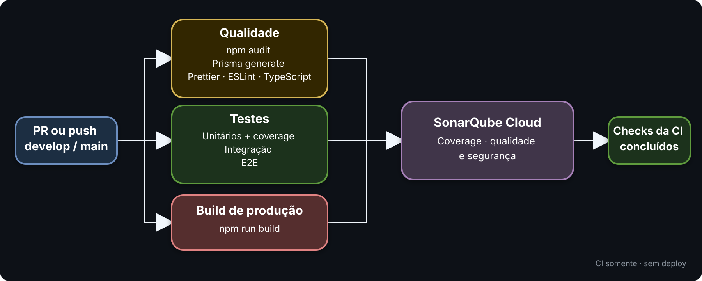

Repositórios separados, trabalho rastreável por task e alterações revisadas antes de chegar às branches compartilhadas.
Aplicação mobile em repositório próprio, com pipeline e histórico independentes.
API e persistência em repositório próprio, com validações específicas do servidor.
GitHub e GitLab: as mesmas regras de branch, revisão e rastreabilidade devem ser respeitadas nas duas plataformas.
Template obrigatório: explicar task, o que foi feito, como foi feito e como testar. A padronização entre repositórios está em andamento.
Frontend visual: toda alteração de tela ou componente deve incluir um print na MR/PR.
## Task Closes #123 ## Tipo de alteração [x] feature [ ] enhancement [ ] bugfix ## O que foi feito? Resumo objetivo da alteração. ## Como foi feito? Decisões técnicas e componentes alterados. ## Como testar? Comandos e passos para validar.
.env.
O GitHub carrega esse modelo a partir de
.github/pull_request_template.md. Preencha o template; não apague as
seções.
Evitar novas funcionalidades relacionadas à entrega atual e priorizar:
Mais informações: cada repositório mantém um README com setup, comandos, arquitetura e orientações específicas para contribuição.
A modern UI architecture built around file-based routes, reusable view components, NativeWind styling, and a clean separation between screens, hooks, and API access.
src/ ├── app/ │ ├── _layout.tsx │ ├── index.tsx │ └── __tests__/ ├── screens/ ├── components/ ├── hooks/ ├── server/ ├── utils/ ├── theme.ts ├── constants.ts ├── global.css └── ...
package.json
{
"main": "expo-router/entry"
}
Expo Router becomes the application bootstrap point.
Expo launch → App entry → src/app/_layout.tsx → Stack navigator → src/app/index.tsx → React Native rendering
Each route file in the app folder becomes a navigable screen.
// src/app/index.tsx
import { HomeScreen } from '@/screens/HomeScreen';
export default HomeScreen;
babel.config.js
→ jsxImportSource: 'nativewind'
→ nativewind/babel
metro.config.ts
→ withNativeWind(config, { input: './src/global.css' })
src/global.css
→ Tailwind base + utilities
<View className="flex-1 bg-white px-6 py-8">
<Text className="text-2xl font-bold text-black">
Profile
</Text>
</View>
Static styling should use `className`; dynamic native styling stays in `style`.
| Layer | Tool | Purpose |
|---|---|---|
| Type safety | TypeScript | Strict typing, aliases, component contracts |
| Linting | ESLint | Code health and import validity |
| UI testing | Jest + RN Testing Library | Render and assert component behavior |
| Platform checks | Expo + emulator/device | Run and inspect real UI on mobile or web |
git switch develop git pull --ff-only origin develop git switch -c 123 # develop UI work and validate git push -u origin 123 # open pull request to develop
This keeps feature work isolated and easy to review.
Arquitetura inspirada em Clean Architecture e SOLID, mantendo módulos, providers e injeção de dependências do NestJS sem criar camadas desnecessárias.
Dentro do Compose, a DATABASE_URL usa alibe-db como host do PostgreSQL.
| Serviço | Endereço |
|---|---|
| API NestJS | localhost:3000 |
| PostgreSQL | localhost:5432 |
| Adminer | localhost:8080 |
--dry-run mostra o que seria criado.--no-spec evita testes espalhados em src/.Depois da geração, reorganize em domain, application, http e persistence e revise o diff.
Cada contexto agrupa domínio, casos de uso, HTTP e persistência.
Use cases conhecem contratos, nunca o Prisma concreto.
O arquivo module conecta controller, use case e implementação.
Service não é uma etapa obrigatória: o use case já exerce o papel de service de aplicação. Domain services aparecem apenas quando existe uma regra real para eles.
Backend/ ├── prisma/ │ └── schema.prisma ├── src/ │ ├── infrastructure/ │ │ ├── prisma.module.ts │ │ └── prisma.service.ts │ └── modules/example/ │ ├── application/ │ ├── domain/ │ ├── http/ │ ├── persistence/ │ └── example.module.ts └── test/ ├── unit/modules/ ├── integration/modules/ └── e2e/modules/
O example serve como referência mínima para os próximos módulos.
| Tipo | Pergunta | Entrada | Local e comando |
|---|---|---|---|
| Unitário | A regra isolada funciona? | Use case ou domínio com fake/mocks. | test/unit/modulesnpm run test:unit |
| Integração | Os providers trabalham juntos? | Módulo Nest, repository ou integração real. |
test/integration/modulesnpm run test:integration
|
| E2E | A API responde ponta a ponta? | Requisição HTTP com Supertest. | test/e2e/modulesnpm run test:e2e |
Coverage: npm run test:cov mede o código de
src/ exercitado pelos unitários e gera o LCOV usado pelo Sonar.
Regra prática: testar a regra no nível mais próximo e manter E2E para endpoints e fluxos importantes.

Escopo atual: somente CI. Deploy/CD não faz parte desta apresentação.
A estratégia de deploy e os ambientes na AWS ainda serão definidos. A CI já existe, mas o CD ainda não.
Amazon Cognito é um dos serviços em avaliação para identidade, login e autorização.
Firebase/FCM está em estudo. Lambda ou outro serviço auxiliar poderá ser avaliado se houver necessidade.
Importante: estes itens ainda não são decisões finais. Serão definidos conforme os requisitos do produto.